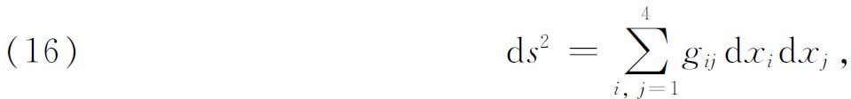
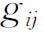
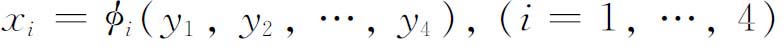
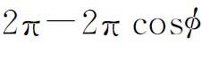
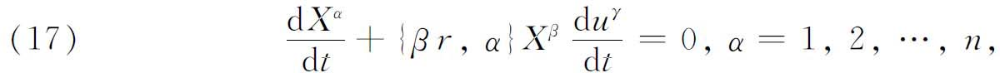
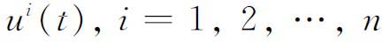
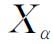
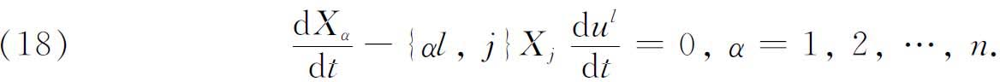

4．平行位移
从1901年到1915年，张量分析的研究只限于极少数的数学家。然而，爱因斯坦的工作改变了这个局面。当时，在瑞士专利局中被聘为工程师的爱因斯坦（1879—1955），以他狭义或特殊相对论(7)的报告极大地震动了科学界。1914年，爱因斯坦接受邀请，到柏林的普鲁士科学院，作为著名的物理化学家范特荷甫（Jacobus Van't Hoff，1852—1911）的继任者。两年以后他发表了他的广义相对论(8)。
爱因斯坦关于物理现象相对性的革命性观点，在全世界的物理学家、哲学家和数学家中激起了强烈的兴趣。数学家主要是被几何的本性所激动，因为爱因斯坦发现这种本性在他理论的创建中是有用的。
涉及四维伪欧几里得流形（空-时）的性质的狭义理论，其解释最好用向量和张量来讲，而涉及四维黎曼流形（空-时）的性质的广义理论，其解释需要使用与这种流形相联系的特殊张量计算。幸而这种计算早已被发展，只是当时还没有受到物理学家的特别注意罢了。
实际上，爱因斯坦关于狭义理论的工作并没有用黎曼几何或张量分析(9)。但是，狭义理论不涉及引力的作用。于是爱因斯坦开始从事于无引力的问题的研究，并通过在他的空-时几何中加进一种结构以说明它的效应，加进的结构使得物体自动地沿着这样一条轨道运动，这轨道与假设物体受引力作用时所运行的轨道相同。在1911年他发表一种理论，这种理论认为引力是这样的：它在整个空间都具有相同的方向，他当然知道这种理论是不现实的。直到这时爱因斯坦只用了一些最简单的数学工具，并且甚至怀疑应用“高等数学”的必要性，他认为“高等数学”常常会使读者惊呆。然而，在布拉格他同他的一位同事、数学家皮克（Georg Pick）的讨论，使他的问题获得了进展，皮克让他注意里奇和列维-齐维塔的数学理论。在苏黎世，爱因斯坦遇见一位朋友格罗斯曼（Marcel Grossmann，1878—1936），后者帮助他学习这种理论；并且以此为基础，他成功地用公式表示了他的广义相对论。
为了表示他的四维世界——三个空间坐标和一个表示时间的第四坐标，爱因斯坦用了黎曼度量

其中x4表示时间。这里

的选取要能反映各个区域中物质的存在。并且，因为这个理论涉及长度、时间、质量和其他物理量由不同的观测者进行确定的问题，而这些观测者彼此相对地以任意的方式运动，所以空-时中的“点”要用不同的坐标系表示，一个坐标系隶属于一个观测者。一个坐标系同另一个坐标系的关系由变换
给出。自然界的规律应当是对所有的观测者都相同的那些关系或表达式。因此，它们是在数学意义下的不变量。
从数学的观点来看，爱因斯坦的工作的重要性，就像已经指出的，在于促使对张量分析和黎曼几何的兴趣的增长。从相对论之后，张量分析中的第一个革新归于列维-齐维塔。在1917年他改进了里奇的一个想法，引进了(10)向量的平行位移（parallel displacement）或平行转移（parallel transfer）的概念。同一年海森伯格也独立地提出了这个思想(11)。在1906年布劳威尔（Luitzen E．J．Brouwer）已经对常曲率曲面引进了这个概念。平行位移概念的目的是要说明一个黎曼空间中平行向量是什么意思。这样做的困难可以这样看出：考虑一球的表面，把这个曲面本身看成一个空间，曲面上的距离由大圆弧给出，这样球面就是一个黎曼空间。如果一个向量，例如起点在一个纬度圆上并指向北方（这个向量将与球面相切），让它的起点沿着圆周移动并且在欧几里得三维空间中保持与自己平行，则当它在环绕圆周的半途中时，它不再同球相切，从而它不在那个黎曼空间中。为了得到适合于黎曼空间的向量平行性概念，就要推广欧几里得的平行性概念，但是在推广的过程中要失去某些熟悉的性质。
列维-齐维塔用以定义平行转移或平行位移的几何概念，在曲面的情形是容易理解的。考虑曲面上的一条曲线C，让一个一端在C上的向量在下述意义下作跟它自身平行的移动：在C的每一点有一个切平面，这族平面的包络是一个可展曲面，而当这个可展曲面在一个平面上展开时，沿着C平行的向量在欧几里得平面上就真的是平行的。
列维-齐维塔推广这个思想以适合n维黎曼空间。在欧几里得平面上下述事实成立：当一个向量的起点沿着一直线——平面上的测地线——作平行于它自己的移动时，这个向量同这直线总是交成相同的角。根据这一点，在一个黎曼空间中，平行性定义如下：当空间中的一个向量作平行于它自身的移动，使起点沿一条测地线运动时，这个向量同测地线（测地线的切线）必须仍然交成相同的角。特别地，测地线的一条切线沿这测地线移动时保持同它自己平行。按照定义，这平移的向量仍旧有相同的大小。这里理解为这个向量始终保持在黎曼空间中，即使这黎曼空间被嵌在一个欧几里得空间中也是这样。平行转移的定义还要求，当两个向量每一个都沿着同一条曲线C作平行于自己的移动时，它们之间的夹角保持不变。一般地说，沿一任意闭曲线C的平行转移，初始向量与最后向量通常不会有相同的（欧几里得）方向。方向的偏差将与道路C有关。例如，考虑一个向量，它从球的一个纬度圆上一点P出发，沿一子午线与球相切。当它沿着圆作平行转移时，它将终止于P点并切于曲面；但是如果φ是P的余纬度（co-latitude），那么这向量最后将与原向量交成一个角

。如果用黎曼空间中沿一曲线平行位移的一般定义，就得到一个解析条件。沿一曲线平行转移的反变向量的分量Xα满足微分方程（省略了求和号）

其中事先假定

定义一条曲线。对于协变向量
，条件是
这些方程可以用来定义沿任何一条曲线C的平行转移。由一个定点P处的所有分量的值唯一确定的解，是在C的每一点有值的向量，并且由定义，它和P点的初始向量平行。方程（18）说明Xα的协变导数是0。
一旦引进了平行位移的概念，就可以用它来描述一个空间的曲率，特别是用无穷小向量以无穷小步长作平行位移所带来的变化来描述。即使在欧几里得空间中，平行性也是曲率概念的基础；因为一个无穷小弧的曲率依赖于走遍这弧的切向量的方向的变化。